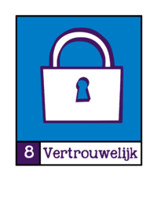
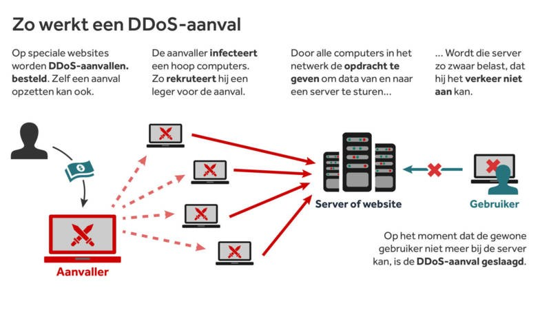

Inleiding
Het beveiligen van onze digitale gegevens gaat voornamelijk over de volgende drie aspecten:
Vertrouwelijkheid: de afscherming van gegevens tegen ongeoorloofde inzage.
Intergriteit: bescherming van gegevens tegen verlies of (on)bedoelde wijzigingen.
Beschikbaarheid: de mate van storingsvrije toegang tot de gegevens.

Vertrouwelijkheid
Voordat er toegang is tot persoonlijke gegevens, is er een controle nodig om te kijken of de gebruiker wel toegang mag hebben. Dit proces wordt authenticatie genoemd.
Er zijn verschillende vormen van authenticatie. Onder andere door iets dat je weet (een wachtwoord of een pincode), iets dat je hebt (een sleutel of een pas), of iets dat je bent (vingerafdruk of een irispatroon).
Behalve de term authenticatie worden ook de termen identificatie en verificatie gebruikt. Bij identificatie wordt er aan je gevraagd: “Wie ben je?”. Dat kun je bijvoorbeeld aangeven door het invoeren van een gebruikersnaam/wachtwoord of het laten scannen van je vingerafdruk op je smartphone.
Vervolgens vindt er een verificatie plaats. Daarbij gaat het om de vraag: “Ben jij wie je zegt dat je bent?” Er kan alleen verificatie plaatsvinden als er gegevens van jou bekend zijn. Bijvoorbeeld in een database of in je smartphone. Er kan zo worden gecontroleerd of jij de juiste persoon bent om toegang te krijgen.
Deze combinatie wordt two factor authentication genoemd.
Een techniek die verwant is aan authenticatie, identificatie en verificatie is screening. Bij screening worden personen of voertuigen geïdentificeerd. Bijvoorbeeld met camera’s.

Intergriteit
Bij jou op school is het alleen voor docenten mogelijk om cijfers in te voeren. Jij als leerling kunt de cijfers alleen bekijken. Het cijfersysteem moet dus controleren of een gebruiker toegang heeft en zo ja, welke rechten die gebruiker heeft. De rechten van een gebruiker zijn verbonden aan diens rol. Een gebruiker met de rol ‘docent’ heeft meer rechten dat een gebruiker met de rol ‘leerling’. Maar iemand met de rol ‘beheerder’ heeft nog meer rechten.
De controle of een gebruiker toegang heeft, valt onder vertrouwelijkheid. De controle welke rechten een vertrouwde gebruiker allemaal heeft, noemen we autorisatie. We noemen dat ook wel een controle van de intergriteit.
Beschikbaarheid
Gevoelige bestanden kunnen versleuteld worden opgeslagen en/of verzonden. Hiervoor wordt er gebruikgemaakt van encryptie. Door middel van een sleutel, bijvoorbeeld een wachtwoord, kan de inhoud van een bestand wiskundig worden ‘gehusseld’.
Voor het opslaan van wachtwoorden, vingerafdrukken en dergelijke wordt gebruikgemaakt van hashing. Hiermee wordt bijvoorbeeld het wachtwoord, net als bij encryptie, gehusseld. Bij hashing kun je echter niet meer terug naar het origineel.
Je webmail, de website van je bank en de OV-planner moeten zo veel als mogelijk beschikbaar zijn. Het komt toch wel eens voor dat websites of andere digitale diensten tijdelijk niet beschikbaar zijn. Dit kan te maken hebben met een zogenoemde DDoS-aanval. De afkorting DDoS staat voor Distributed Denial Of Service. Oftewel, een gecontroleerde aanval om een service (tijdelijk) uit te schakelen.